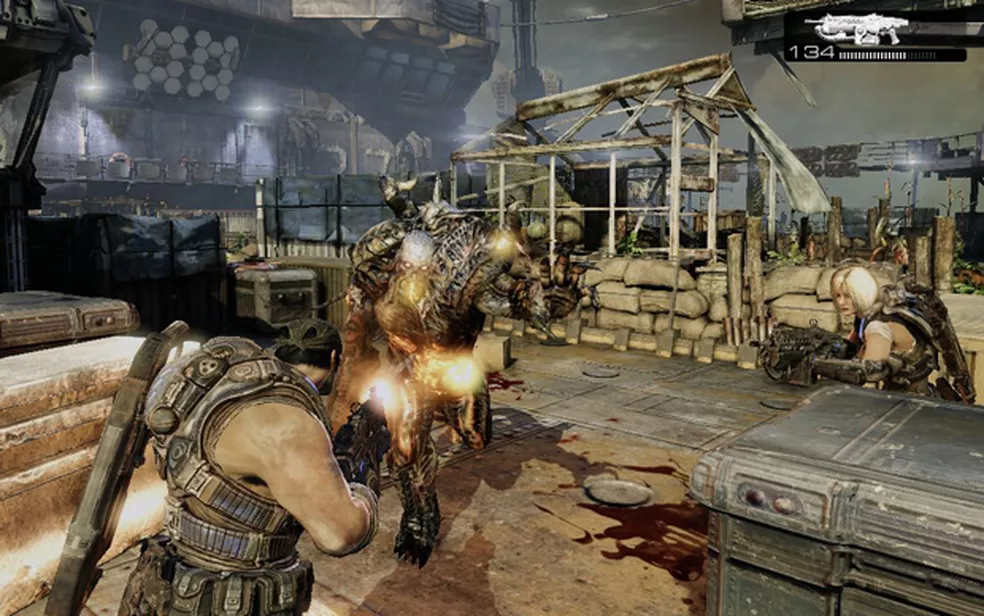
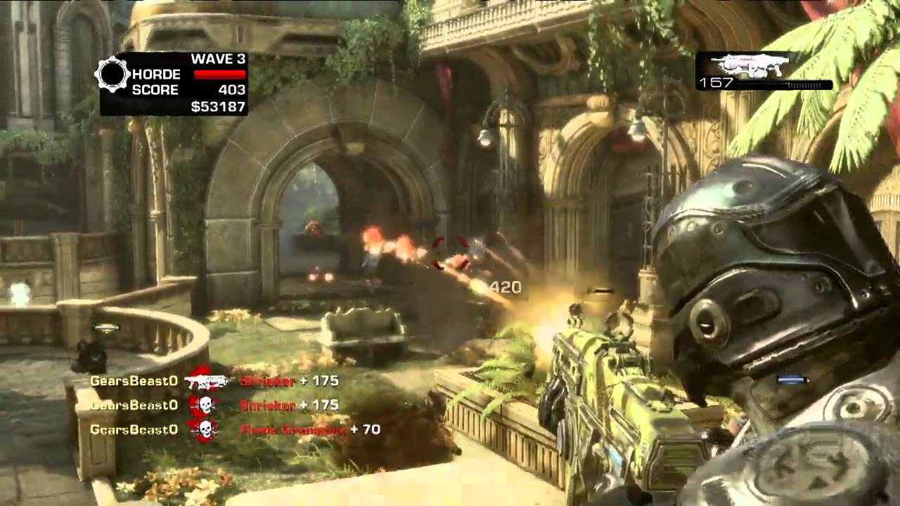
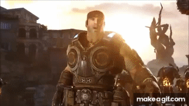
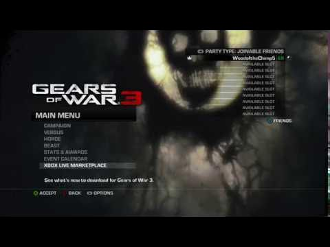

Gears of War 3
« Voltar para Seleção do Game
 |
 |
 |
 |
Desenvolvedora: Epic Games
Plataforma: Xbox 360 (Retrocompatível com Xbox One e Series S/X)
Ano de Lançamento: 2011
Sinopse: Dois anos após a queda de Jacinto, a última cidade humana, a Coalizão de Governos Ordenados (COG) se desintegrou e os sobreviventes vivem em comunidades isoladas e navios.
Enquanto a Horda Locust continua a ser uma ameaça, surge uma nova e terrível força: os Lambent, mutantes infectados pela Emulsão que ameaçam consumir tudo o que resta de vida no planeta Sera. Marcus Fenix e o esquadrão Delta enfrentam sua jornada final para salvar a raça humana da extinção total, culminando no desfecho épico da trilogia original.